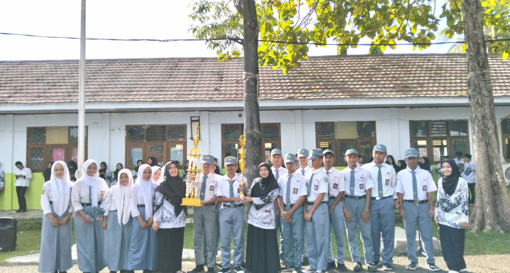
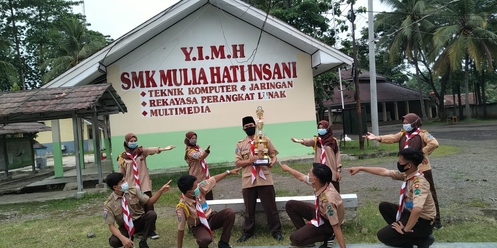
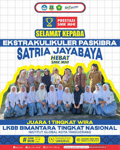
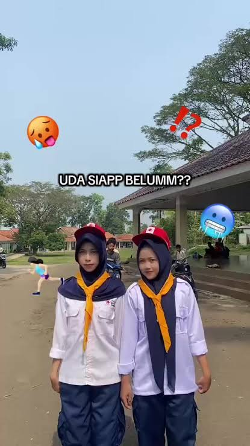
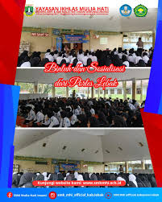
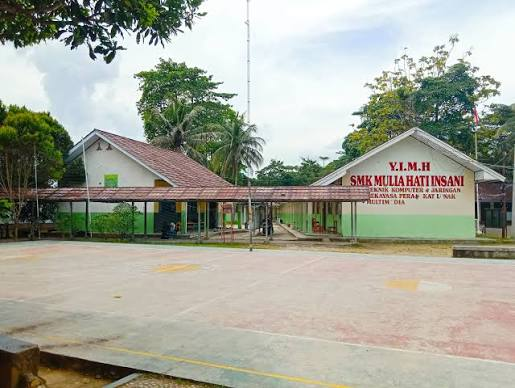
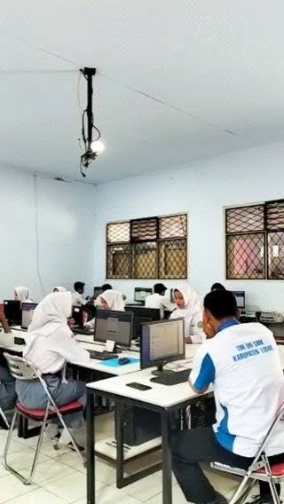

Kegiatan Sekolah
Dokumentasi kegiatan siswa bersama warga sekolah.
Humanis, Edukatif, Bertanggung Jawab, Aktif, Tawakal
Dokumentasi berbagai kegiatan dan aktivitas siswa SMK Mulia Hati Insani dalam bidang pendidikan, ekstrakurikuler, organisasi, dan kegiatan sekolah.

Dokumentasi kegiatan siswa bersama warga sekolah.

Kegiatan pramuka untuk melatih kedisiplinan dan kepemimpinan.

Latihan kekompakan, disiplin, dan cinta tanah air.

Kegiatan kesehatan dan kepedulian terhadap sesama.

Kegiatan pembinaan keagamaan dan akhlak siswa.

Wadah siswa untuk mengembangkan kreativitas dan bakat seni.

Suasana lingkungan SMK Mulia Hati Insani.

Dokumentasi kegiatan belajar siswa di sekolah.
Galeri ini menjadi tempat untuk menyimpan berbagai dokumentasi kegiatan SMK Mulia Hati Insani. Setiap kegiatan menjadi bagian dari pengalaman dan perjalanan siswa dalam mengembangkan potensi, kreativitas, dan karakter.